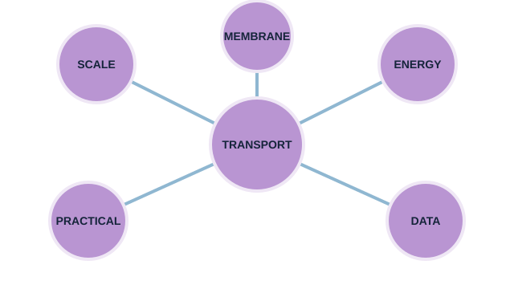

LAUNCH Science · W7L1 · lesson resources
Repair the knowledge map
Choose one shared task or resource within the current lesson stage. Keep the lesson’s 40-minute timetable and 15-minute independent work.
We Do · Repair the knowledge map
Choose two ideas. Connect them using because or whereas. Your partner checks the science.
- Magnification Units Resolution
- Osmosis Membrane Percentage change
- Active transport Respiration Uptake
Discuss, point, write or dictate your first reason. Use one example first; extend only if there is time.
Reveal shared reasoning after an attempt
Matching units makes a magnification ratio valid.
Mass change can provide evidence of net water movement by osmosis.
Respiration releases energy for active transport.
Accept other accurate, explained links.
This page keeps your writing while it stays open. It does not save or send it.
Model explanation and diagram

This reviews cells, microscopy and transport taught so far. It is not a claim that every part of GCSE Topic 1, including enzymes, has been completed.
Watch for: Do not turn confidence colours into public rankings. Ask for a piece of work or a corrected explanation to support a review choice.
Give a smaller support cue
Choose two ideas. Link them with “because” or “whereas”. For a cell adaptation, name the feature and what it helps the cell do.
Optional video · Microscopy
Watch for: What is the difference between making an image bigger and resolving more detail?
Use a short relevant extract within I Do, then pause for an explanation. The clip replaces part of the modelling time.
Open the freesciencelessons video in a new tab
No-video version · use the same question

Magnification compares image size with actual size. Resolution is the ability to distinguish two close points as separate. Increasing size alone does not reveal more detail.
Internet is needed for the optional clip. It is concept teaching; viewing it is not completion of a practical.